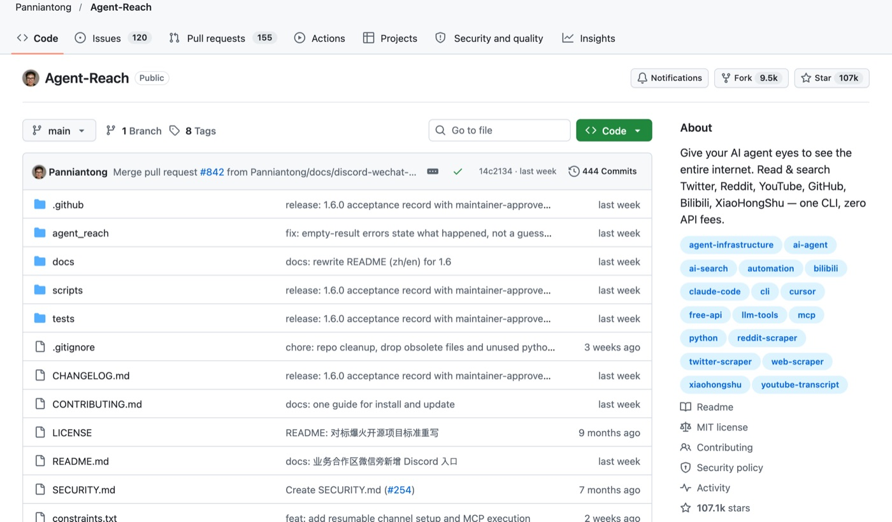
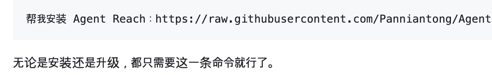

Agent-Reach 사용법: AI가 유튜브 자막·웹페이지를 읽어 오게 · 깃허브 털기 #02
직접 깔기 벅차면, 사업자용 페이지·광고 제작은 맡길 수도 있어요맡기기 →⚠ 채팅 창이 아니라 클로드 코드 입력창입니다클로드 데스크톱 앱의 「Code」 탭이나 터미널에서 claude를 친 뒤 나오는 입력창에 붙여 넣어야 깔립니다. 클로드 유료 구독(Pro · 월 20달러부터)이 필요합니다.
AI한테 「이 유튜브 무슨 내용이야?」「이 깃허브 도구 뭐 하는 거야?」를 물으면 대개 「링크를 열 수 없어요」라고 합니다. Agent-Reach를 붙이면 클로드가 유튜브 자막·웹 글·깃허브를 직접 읽어 와서 답합니다. 무료 오픈소스이고, API 요금이 없습니다.
- 유튜브 자막 읽기
- 웹 글 읽기·검색
- 깃허브 읽기
- 설치 ⭐⭐⭐
한눈에 보기 · 4단계
- 준비클로드 앱 「Code」 탭 · 처음 한 번
- 깔기클로드에게 한 문장
- 되는지 확인「상태 확인해 줘」 한 마디
- 바로 시키기아래 복사 문장 3개
1준비 · 처음 한 번
필요한 것은 두 가지입니다. 클로드 유료 구독(Pro · 월 20달러부터)과 클로드 코드. 무료 플랜에는 클로드 코드가 들어 있지 않습니다(공식 안내). 코딩은 몰라도 됩니다.
가장 쉬운 길 · 클로드 데스크톱 앱 (터미널 없음)
- claude.com/download 에서 맥용 앱을 받아 깔고, 쓰던 클로드 계정으로 로그인합니다.
- 왼쪽 사이드바 맨 위의 「Code」 탭을 누릅니다. 업그레이드하라는 안내가 나오면 유료 구독이 필요하다는 뜻입니다.
- 입력창 아래 폴더 칸에서 「Open folder…」를 눌러 폴더 하나를 고릅니다. 처음이면 바탕화면에 빈 폴더(예: 깃허브털기)를 만들어 고르세요.
- 그 입력창에 아래 회색 칸 문장을 붙여 넣고 보내면 됩니다.
터미널이 편하면 공식 설치 명령으로 깔고 claude를 쳐도 같습니다. 자세한 건 무료 시작 키트 4쪽. 회색 칸의 「복사」를 누르면 문장이 복사되고, 직접 눌러야 하는 게 있으면 클로드가 알려 줍니다.
2깔기
깃허브 페이지(README)에는 「AI에게 이 문장을 보내라」고 적혀 있습니다. 중국어 문장이라, 같은 뜻의 한국어 문장을 만들었습니다. 「깔기 전에 먼저 알려 줘」를 넣어서, 무엇을 하는지 듣고 나서 깔게 했습니다.

Agent Reach를 깔아 줘. 설치 안내는 여기에 있어: https://raw.githubusercontent.com/Panniantong/Agent-Reach/main/docs/install.md
깔기 전에 무엇을 실행하는지, 어디에 깔리는지, 로그인이나 돈이 필요한 게 있는지 쉬운 말로 먼저 알려 주고 내가 「좋아」라고 하면 진행해.깃허브에 적힌 원래 문장 보기

깔다가 「명령을 실행해도 될까요?」「uv라는 도구를 먼저 깔게요」 같은 질문이 나올 수 있습니다. README에 따르면 uv는 관리자 비밀번호가 필요 없는 설치 도구입니다.
3되는지 확인
Agent Reach 상태 확인해 줘. 지금 되는 기능과 안 되는 기능을 표로 보여 주고, 안 되는 건 이유도 적어 줘.제 맥에서 실제로 확인한 결과입니다(2026-11-01, Agent Reach 1.6.0). 기본으로 켜지는 것은 유튜브·웹·깃허브·빌리빌리·V2EX(레딧은 선택)이고, X·인스타·페이스북 같은 로그인 채널은 따로 추가해야 켜집니다.
실제 출력 · 기능 시험PASS youtube read [yt-dlp] 1887ms
PASS youtube search [yt-dlp] 1450ms
PASS youtube subtitle [yt-dlp] 3140ms
PASS web search [exa] 542ms
PASS web read [jina] 581ms
PASS github search [gh] 579ms
PASS github read [gh] 851ms
4바로 시키기
여기부터가 진짜 쓰임새입니다. 괄호 안만 바꿔서 붙여 넣으세요.
① 유튜브 영상, 안 보고 내용만
Agent Reach로 이 유튜브 영상 자막을 읽어 와서, 핵심 5줄과 내가 바로 따라 할 수 있는 순서로 정리해 줘: (유튜브 주소)② 긴 웹 글, 쓸 것만
Agent Reach로 이 글을 읽고, 내 일(작은 쇼핑몰 운영)에 바로 쓸 수 있는 것만 3개 뽑아 줘. 원문에 없는 말은 넣지 마: (글 주소)실제로 제 홈페이지 글을 읽혀 봤더니, 제목·날짜·본문을 그대로 가져왔습니다.
실제 출력 · 웹 글 읽기 (앞부분)"title": "archify 사용법: 설명하기 어려운 일을 그림 한 장으로 · 깃허브 털기 #01",
"published_at": "2026-10-31",
"text": "깃허브 털기 #01 · 2026.10.31 · 고친 날 2026.11.01 · HEONLOG …"
③ 깃허브 도구, 깔기 전에 먼저 읽히기
Agent Reach로 이 깃허브 저장소의 README와 LICENSE를 읽고, 깔지는 말고 알려 줘. ① 무엇을 하는 도구인지 한 줄 ② 상업적으로 써도 되는지 ③ 돈·로그인이 필요한 기능 ④ 저절로 밖에 연결하는 기능. 모르는 건 「미확인」: (깃허브 주소)!막히면
제 경우도 그랬습니다. 밖에서 받은 코드를 실행하는 설치라 클로드의 보안 장치가 막았습니다. 클로드가 알려 주는 명령 한 줄을 보고, 무엇을 하는지 확인한 뒤 입력창 맨 앞에 !를 붙여 직접 붙여 넣었더니 약 11초 만에 끝났습니다.
제 맥에서도 끝까지 안 됐습니다(응답이 깨짐 · 원인 미확인). 유튜브·웹·깃허브는 잘 됩니다. 레딧은 빼고 쓰세요.
방금 오류가 무슨 뜻인지 쉬운 말로 알려 주고, 고치는 방법을 하나씩 알려 줘. 관리자 비밀번호가 필요하거나 돈이 드는 방법이면 하기 전에 먼저 물어봐.✕하지 않은 것
- X·인스타·페이스북 로그인 연결 — README에서도 「실험」 단계로 따로 추가하게 돼 있고, 계정이 제한될 위험이 있어 켜지 않았습니다.
- 글쓰기·댓글·DM — 읽기만 하는 도구로 씁니다.
알아 둘 점: 깔면 클로드뿐 아니라 이 맥의 다른 AI 프로그램(제미나이·코파일럿 등) 스킬 폴더에도 같이 연결됐습니다(지우기 미리보기에서 확인). 그래서 「컴퓨터 전체」에 깔리는 도구로 봅니다.
↩지우고 싶으면
Agent Reach를 지우고 싶어. 먼저 지울 목록만 보여 주고(실제로 지우지는 말고), 내가 확인하면 그때 지워 줘.README에 따르면 깐 것은 모두 내 컴퓨터의 한 폴더(~/.agent-reach/)에 모여 있고, 「지워 줘」 한마디면 목록을 먼저 보여 준 뒤 지웁니다. 실제로 미리보기를 돌려 보니 지울 목록과 마지막 명령(uv tool uninstall agent-reach)이 나왔습니다.
클로드한테 「이 유튜브 영상 내용 정리해 줘」라고 시키고 싶은데 영상을 못 읽는다면, 이 도구를 보세요. Agent-Reach는 AI가 유튜브 자막, 웹페이지, 깃허브 같은 곳의 글을 읽어 오게 해 주는 깃허브 무료 도구입니다. 개발은 모르지만 AI한테 시켜서 깔아 보고 시험한 그대로 적었습니다.
깃허브: Panniantong/Agent-Reach · 라이선스 MIT(상업적으로 써도 됨) · 별 약 10.7만 개(2026-11-01 기준) · 깐 날 2026-10-30
| 무엇 | 클로드가 유튜브 자막, 웹페이지, 깃허브 같은 바깥 사이트의 글을 읽어 오게 해 줍니다. |
|---|---|
| 준비물 | 클로드 코드(또는 코덱스) · 설치 명령 한 줄을 터미널에 직접 붙여 넣음 |
| 난이도 | ⭐⭐⭐ 터미널 필요 · 제 경우 기능 17개 중 13개 작동 |
무엇을 하는 도구인가
클로드가 바깥 사이트의 글을 가져와 읽을 수 있게 해 줍니다. 유튜브 자막, 웹페이지, 깃허브 같은 곳을 읽어 오는 기능이 들어 있습니다. 글을 읽어 오는 도구라서, 저는 읽기 기능만 씁니다.
설치 난이도 ⭐⭐⭐ (터미널 필요)
- 설치 명령 한 줄을 터미널(검은 명령 창)에 넣어서 깝니다.
- 처음에는 클로드가 직접 깔려고 했는데, 밖에서 받은 코드를 실행하는 일이라 보안 장치가 막았습니다.
- 그래서 무엇을 실행하는 명령인지 확인한 뒤, 명령 한 줄을 제가 직접 붙여 넣었습니다.
깔면서 막힌 곳
- 클로드의 설치를 보안 장치가 막은 것이 첫 번째 막힌 곳이었습니다. 위처럼 사람이 직접 붙여 넣어서 넘어갔습니다.
- 레딧 검색은 끝까지 되지 않았습니다. 원인은 아직 모릅니다(미확인).
써 본 결과
- 시험해 보니 기능 17개 중 13개가 작동했습니다.
- 유튜브 자막 읽기는 잘 됩니다.
- X·인스타그램 로그인이 필요한 기능은 써 보지 않았습니다. 이유는 아래에 적었습니다.
근데 함정이 있어요
X·인스타그램처럼 로그인해서 읽는 기능이 들어 있는데, 내 계정을 연결해야 합니다. 자동으로 읽어 가는 일이 많으면 계정이 제한될 수 있어서 저는 켜지 않았습니다. 로그인 없이 되는 기능만 쓰는 것을 권합니다. 그리고 기능 목록에 있다고 다 되는 것은 아니었습니다. 제 경우 17개 중 4개는 되지 않았습니다.
자주 묻는 질문
기능 목록에 있는 건 다 되나요?
제 경우 17개 중 13개가 작동했습니다. 레딧 검색은 끝까지 되지 않았고, 원인은 아직 모릅니다(미확인).
X·인스타그램 글도 읽어 오나요?
로그인해서 읽는 기능이 있지만 내 계정을 연결해야 합니다. 계정이 제한될 수 있어서 저는 켜지 않았고, 로그인 없이 되는 기능만 씁니다.
상업적으로 써도 되나요?
라이선스가 MIT라 상업적으로 써도 됩니다.
이런 분께
- 유튜브 영상·웹 글을 클로드에게 읽혀서 정리하고 싶은 분
- 이미 클로드 코드나 코덱스를 쓰고 있는 분
- SNS 계정을 연결하지 않고 읽기 기능만 쓰려는 분
묻고 답한 것
막힌 곳은 이 회차 인스타그램 게시물에 댓글이나 DM으로 남겨 주세요. 여러 분이 같은 데서 막히면 답을 여기에 정리해 둡니다.
아직 정리한 질문이 없어요.